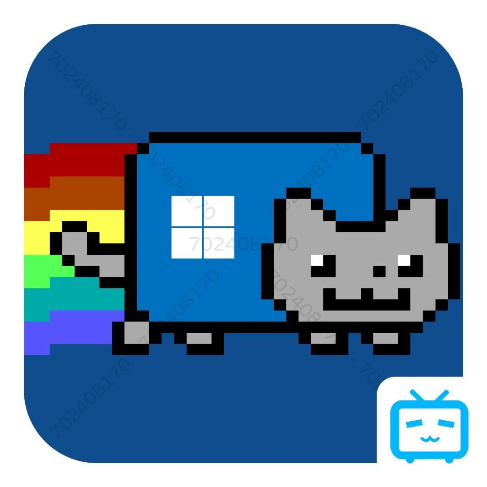

Our Software Features
It is equivalent to some customized and streamlined toolkits on the market. This toolkit will not charge you a penny. We promise to provide users with a broader platform support for FREE FOREVER.
The streamlined and customized toolkits on the market are definitely less efficient than this one, and also follow the principle of cost-effectiveness.
To help users solve the necessary problems or questions, we take the solution and application update service for users all day and all year round.
1. System simplification (component removal) - remove unnecessary components to make the system smooth as new
2. System optimization (preset, add) - preset the system for your later customization
3. Custom operation (add, delete, execute, etc.) - preset the system, you can customize the function to facilitate your later customization
4. Configure (save, load) - save the previously customized settings to save your time
5. Project (Create, Open) - After creating a project, it can be saved for future use (Open Project)
2. System optimization (preset, add) - preset the system for your later customization
3. Custom operation (add, delete, execute, etc.) - preset the system, you can customize the function to facilitate your later customization
4. Configure (save, load) - save the previously customized settings to save your time
5. Project (Create, Open) - After creating a project, it can be saved for future use (Open Project)
About Us
Nick
Program Developer
Mr.Gan
Front office Developer
JERRY-SYSTEM
Publicity Personnel

MEMZ-Windows11
NULL
OnLine
NULL
SYSTEM-WinPE-CHD
NULL
Copyright © 2023 SystemDIY Tools.Piracy must be prosecuted!